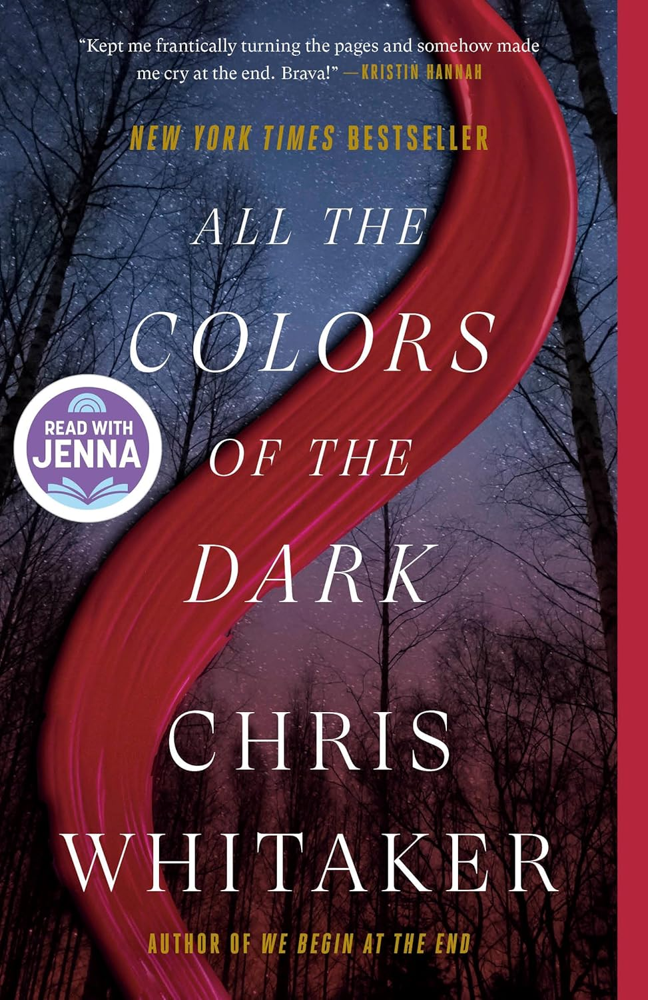

"All the Colors of the Dark"
- Read on 2025-09-26
- Rating: ️️️️️
- Format: 🎧 (14 hours 37 minutes)
I don't enjoy stories that have bad things happening to kids. The book is not focused on the worst of those things, but on Patch, a boy/young man/man trying to save someone from bad things. Patch is focused on that task, in an undeviating way. So much is neglected and put to the side on that search.
I don't enjoy these types of books (2/5 stars). It's told very well (4/5 stars), but it's not a story I enjoy. The reader of the audiobook did a great job with Sammy's voice - who is a highly inappropriate and distasteful person... with a good heart.